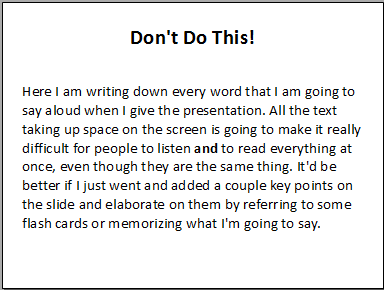
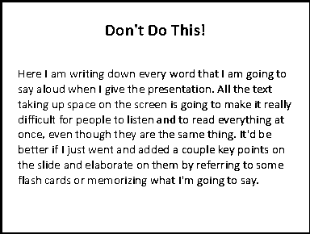
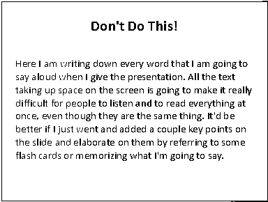
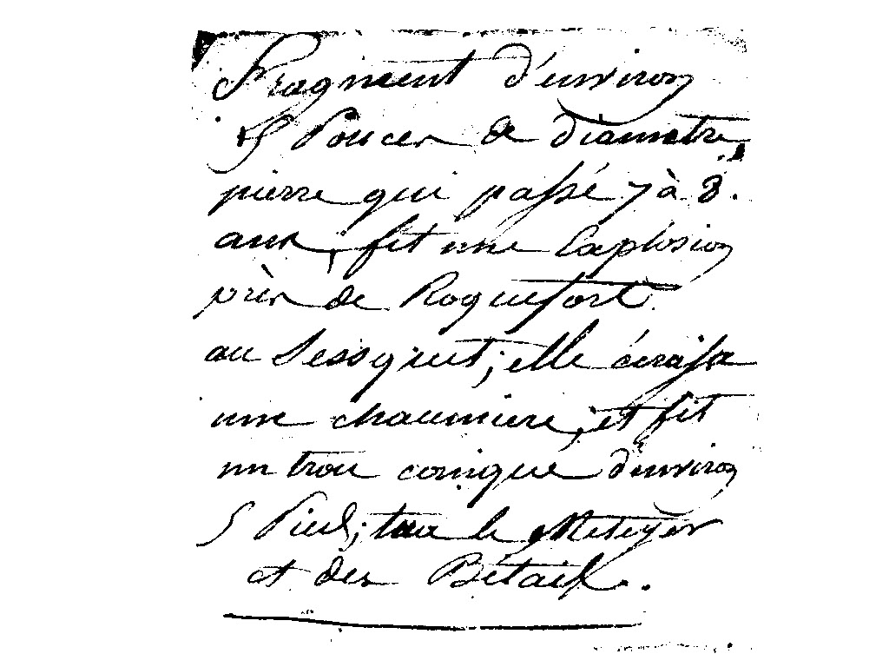
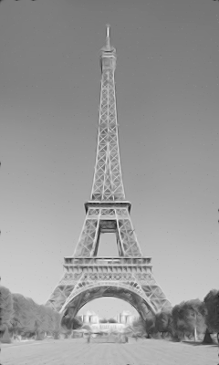

1)
2)
Threshold: 193 - 255
Channel: Value
3)
Threshold: 56 - 255
Channel: RGB
4)
There is not necessarily a ‘best’ threshold value. This value I have chosen is a balance between background noise and clearness of the text. Increasing the threshold adds background noise but makes text clearer and vice versa. The balance between the two I settled on was something I determined using my personal preference and best judgment.
5)
A) the black rectangle boundary is detected and outlined with a white border
B) the grey rectangle boundary is detected and outlined with a white border
C) the the lines forming the x are outline with a a white border however the edges at the cross section where the two lines overlap are not detected since the lines are the same colour.
6)

Noise Reduction Method A: GEGL filter
- This method applies a simple GEGL filter to reduce noise.
- The noise is significantly reduced but still a tiny bit visible (hard to tell without zooming in significantly).
- Consequently, the image becomes blurrier.
Noise Reduction Method B: Despeckle filter
- This method applies a ‘despeckle’ filter to reduce noise
- 100% of the noise is removed.
- Consequently, the image becomes ‘softer’.
Comparison of the two reduction techniques:
- It might seem Method B is objectively better than Method A because it reduces 100% of the noise.
- However, Method A can also do this if set very high. The problem is if Method A is set very high then it becomes way blurrier than Method B.
- Despite this, Method A preserves more details in the image when set to a moderate value that removes 'most' of the noise.
- For example, the buildings in the background below the tower are easier to make out in Method A.
- Therefore, Method A could be seen as the best compromise between reducing background noise and preserving details in the image.